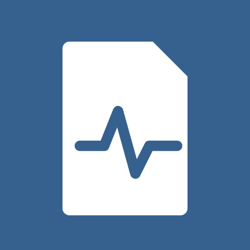
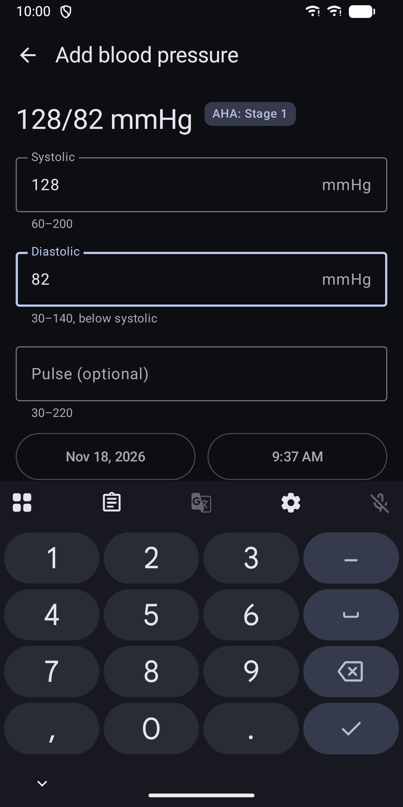

Health Reports: PDF de salud
Convierte la presión arterial, el pulso y el sueño de Health Connect en un PDF.




Acerca de la app
Health Reports convierte los datos de presión arterial, pulso y sueño de Health Connect en un PDF claro que puedes llevar a la consulta del médico. Elige un periodo de 7, 30 o 90 días, o fija tus propias fechas. El informe empieza con una página de resumen y sigue con el detalle: - Resumen: media, mínimo y máximo de presión arterial y pulso, tendencia del pulso en reposo, duración media del sueño y número de mediciones en cada categoría de presión arterial. - Presión arterial: tabla con todas las mediciones, con hora, aplicación de origen y categoría AHA en un lenguaje neutro. - Pulso: valores diarios en reposo, mínimos y máximos, con un gráfico de tendencia. - Sueño: tabla por noche con el tiempo total y las fases del sueño, y un resumen de las fases. Otras funciones: - Vista previa de cada página antes de compartir el informe. - Comparte el PDF por correo o mensaje, o imprímelo, con el menú normal de Android para compartir e imprimir. - Añade una medición de presión arterial a mano, con pulso si quieres. Se guarda en Health Connect. - Las mediciones duplicadas de distintas aplicaciones se unen. Puedes elegir una fuente preferida para cada medida. - Si quieres, añade tu nombre al informe. No hace falta la fecha de nacimiento. El nombre solo se guarda si lo pides y está cifrado en tu teléfono. - Un widget en la pantalla de inicio muestra la última medición de presión arterial y la media de 7 días del pulso en reposo. - El tema claro u oscuro sigue al sistema. Funciona en teléfonos y tabletas. Privacidad: La aplicación no tiene permiso de internet, ni cuenta, ni analíticas. No guarda una copia de tus datos de salud. Health Connect sigue siendo el único lugar donde viven los datos. El PDF temporal se borra al salir de la vista previa. El informe solo va adonde tú decidas enviarlo. Compra: Tu primera exportación se puede hacer sin pagar. Después, compartir e imprimir más informes requiere una compra única dentro de la aplicación llamada Informes ilimitados. Ver tus datos, la vista previa, añadir mediciones y el widget no requieren compra. Puedes restaurar la compra en Ajustes. Requisitos: Android 9 o superior. Android 14 y posteriores incluyen Health Connect. En Android 9 a 13, instala la aplicación Health Connect desde Google Play. También necesitas una aplicación o un dispositivo que escriba presión arterial, pulso o sueño en Health Connect, o puedes añadir las mediciones de presión arterial a mano. Importante: Health Reports solo muestra valores registrados. No da diagnósticos ni consejos médicos. Habla con tu médico sobre lo que significan tus mediciones.